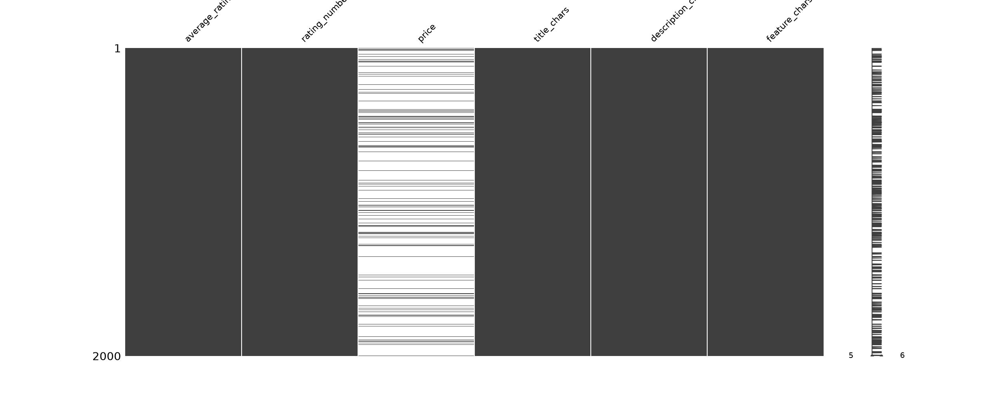
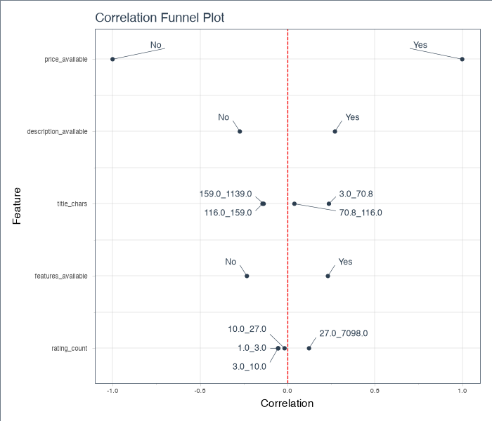

EDA tools → evidence ledger → 5 Whys → provisional Good Question Cards → pilot decision.
Sephora integration and evaluation without new annotation
Executed locally without LLM/API calls. Statistics are observations; 5 Whys explanations stop at unknowns; proposed model experiments have not been run. Customer fit and commercial uplift remain unmeasured.
Full-file descriptive summaries; seeded samples for expensive visual tools. No customer demographic or fit labels are inferred from ratings.
Catalog EDA · Review EDA · Sweetviz (regenerate locally) · Tool execution scopes · Input hashes and versions

Sample visualization; the ledger below contains exact population counts.

Availability correlations are descriptive and cannot identify why fields are missing.
| id | claim | numerator | denominator | percent | boundary |
|---|---|---|---|---|---|
| E1 | Products with observed price | 17704 | 112590 | 15.72% | Missing price does not mean unavailable or free. |
| E2 | Products retained by price + description + features filter | 4332 | 112590 | 3.85% | Eligibility changes are measurable; conversion effects are unknown. |
| E3 | Exact duplicate excess review records | 7275 | 701528 | 1.04% | Exact records only; repeated short phrases are not evidence of fraud. |
| E4 | Review records matched to catalog | 701528 | 701528 | 100.00% | Parent-level match does not establish variant-level attribute agreement. |
| E5 | Reviewers with one distinct observed product | 589163 | 631986 | 93.22% | Category-specific observed reviews are not complete purchase histories. |
| E6 | Reviewers with at least five distinct observed products | 1471 | 631986 | 0.23% | Earlier eligible histories after a temporal split will be fewer. |
| E7 | Products with >=20 deduplicated reviews and >=3 low and >=3 high ratings | 4712 | 112565 | 4.19% | Candidate pool only; neither preference conflicts nor customer fit are validated. |
| E8 | Raw reviews with variant ASIN different from parent ASIN | 61188 | 701528 | 8.72% | Identifier difference alone is not a join error. |
| E9 | Five-star products supported by fewer than five catalog ratings | 12189 | 14519 | 83.95% | Catalog ratings and collected reviews have different scopes. |
Evidence: E1, E2
Root Cause: Verified exclusion mechanism: conjunction of three availability requirements. Origin of missingness is unresolved.
Countermeasure: Report all-product and eligible-product results separately; audit missing fields against independently obtained source records.
Reverse Check: Removing the filter restores eligibility by construction; improved fit or revenue must be tested separately.
Confidence: High for exclusion mechanism; unknown for upstream origin.
Evidence: E5, E6
Root Cause: The snapshot lacks enough observed within-user history for most users; its behavioral origin is unresolved.
Countermeasure: Begin with explicit context annotation; report the size and selection of any eligible history subset after temporal splitting.
Reverse Check: More earlier reviews could enlarge eligibility; they would not establish that personalization improves customer fit.
Confidence: High for data limitation; low for behavioral explanations.
Evidence: E7, E8, E9
Root Cause: The desired construct (customer fit) has not been independently measured; there is no established cause of rating disagreement.
Countermeasure: Annotate context, aspect, preference, defect, logistics and uncertainty with quoted spans; collect real shopper judgments before fit claims.
Reverse Check: Better annotations may distinguish explanations; only held-out validation can show the distinction is reliable.
Confidence: High for measurement gap; causal explanation unresolved.
Planning scores only: importance, feasibility, falsifiability, evidence leverage and downside learning, each 1–5. Originality is unresolved; these are provisional data-grounded designs.
| ID | Question | importance | feasibility | falsifiability | evidence_leverage | downside_learning | Total /25 | Decision |
|---|---|---|---|---|---|---|---|---|
| Q1 | Can an LLM distinguish explicit preference mismatch from product defects and delivery complaints? | 5 | 4 | 5 | 5 | 5 | 24 | pilot |
| Q6 | Does evaluation only on complete listings overstate LLM interpretation performance? | 4 | 4 | 5 | 5 | 4 | 22 | secondary pilot |
| Q3 | Do LLM conclusions remain stable when irrelevant brand and rating cues are masked? | 4 | 4 | 5 | 4 | 4 | 21 | secondary pilot |
| Q2 | Does explicit usage context improve customer–product fit judgments beyond product ratings? | 5 | 2 | 5 | 3 | 5 | 20 | park pending shopper labels |
| Q4 | Does variant-aware review retrieval improve aspect interpretation? | 4 | 2 | 4 | 3 | 4 | 17 | park pending variant mapping |
| Q5 | Do earlier reviewer histories improve fit judgments over explicit current needs? | 4 | 1 | 4 | 2 | 4 | 15 | park pending history audit |
Research Question: Can an LLM distinguish explicit preference mismatch from product defects and delivery complaints?
Stake: A merchant needs different actions for unsuitable targeting, a defective product and delivery problems.
Hidden Assumption: Review text contains enough explicit evidence for humans to distinguish these explanations.
Competing Hypotheses:
Discriminating Test: Compare majority/keyword baselines, text-only LLM and context/aspect-guided LLM under an equal model budget. Use two independent annotators plus adjudication; allow unclear and multiple labels. Split by parent product and remove exact duplicates; exclude listing aggregate ratings and reviewer identifiers. Report macro-F1, per-class recall, span F1, uncertainty coverage, product-cluster bootstrap intervals, cost and latency.
Falsifier: No reliable human agreement, or no held-out improvement over the strongest baseline after controlling for sentiment and review length. Treat inconclusive intervals as inconclusive.
Two Week Pilot: Days 1–3: refine schema on 50 reviews. Days 4–7: independently label 300 additional reviews across rating and completeness strata, including mixed-rating products and controls. Days 8–10: freeze schema and product-disjoint split; lock prompts on development data. Days 11–14: evaluate baselines and context ablation on untouched test products. Use pilot variance to plan a powered follow-up.
Minimum Resources: Two annotators, one adjudicator, local review text, annotation budget; model access and cost approval before running LLM experiments.
Strongest Reviewer Objection: This may be ordinary complaint classification; no independently verified customer fit or demonstrated novelty.
Next Action: Review the 200-row annotation seed, extend it beyond rating-balanced sampling, and label the first 50 with uncertainty.
Status: Provisional design; no experiment has been run.
Research Question: Does evaluation only on complete listings overstate LLM interpretation performance?
Stake: A shopping assistant evaluated only on complete listings may leave most of a merchant catalog untested.
Hidden Assumption: Human labels can be sampled across completeness strata.
Competing Hypotheses:
Discriminating Test: Sample independently labeled reviews in complete and incomplete product strata. Keep test products disjoint from development. Compare the same frozen model; report within-stratum macro-F1 and catalog-weighted estimates. Match or stratify on observable review length and volume; validate product types manually. Report residual confounding and do not interpret a stratum difference as a causal effect of missingness.
Falsifier: No meaningful stratum difference, or the difference disappears under observable controls; either result limits the selection-bias claim.
Two Week Pilot: Week 1: cross-tab eligibility and design a 300-review stratified annotation sample. Week 2: adjudicate, freeze prompts, evaluate a single fixed model and reweight to known catalog proportions. Report uncertainty and strata with insufficient labels.
Minimum Resources: Same annotators and frozen model as Q1; extra labels may be necessary for sparse strata.
Strongest Reviewer Objection: Observed groups are confounded, listing timestamps are unknown, and the pilot may be underpowered.
Next Action: Audit the eligibility table and preregister the strata and estimand before looking at model scores.
Status: Provisional design; no experiment has been run.
A target review must never be both the source of a purported pre-purchase need and independent ground truth for its own prediction. Keep product families, duplicates and development/test data separated. Validate variant mappings and avoid future listing aggregates in historical prediction.
Evidence CSV (regenerate locally) · 5 Whys Markdown · Questions and pilots Markdown